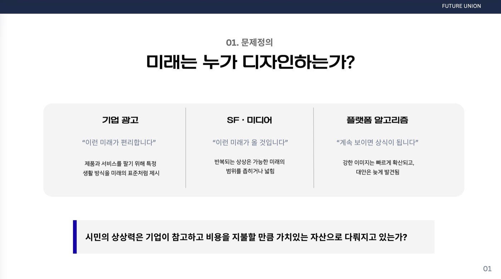
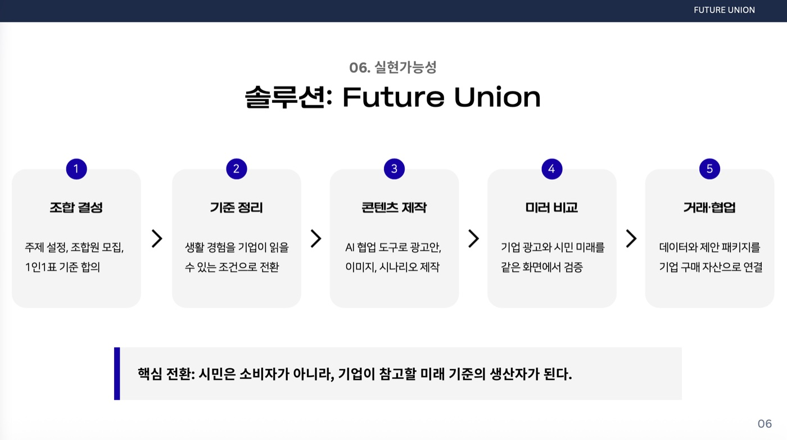
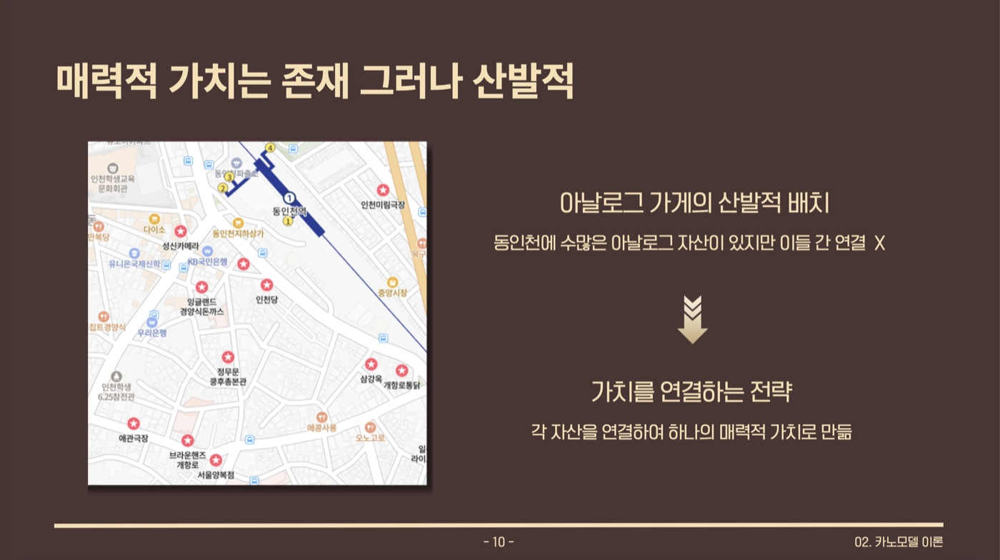
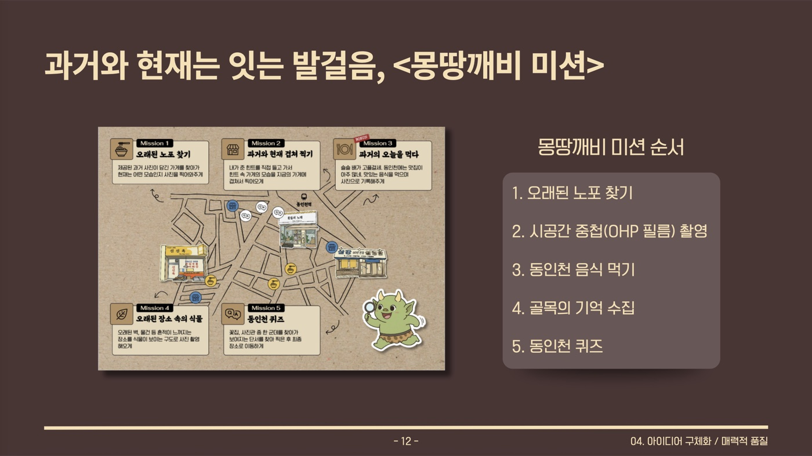
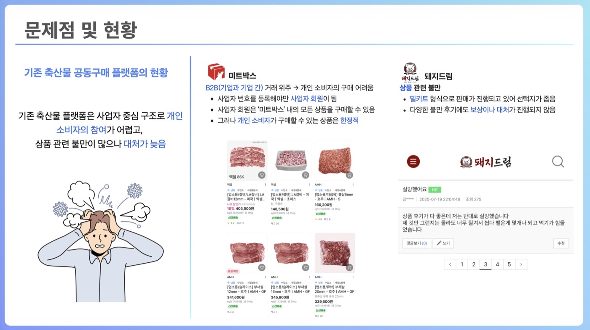
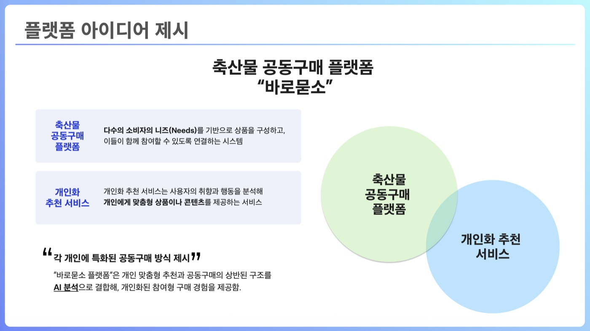

About
안녕하세요, 인천대학교 데이터과학과에 재학 중인 김도현입니다.
데이터 분석을 배우며 기업 경영에서의 의사결정 역량을 기르고 있습니다. 또한 다양한 아이디어를 실제 서비스로 구현하는 것을 좋아합니다. 사진 SNS부터 실시간 멀티플레이 게임, 자동화 봇까지 — 작은 아이디어라도 실제로 동작하는 서비스로 완성하는 과정을 즐깁니다.
- 소속인천대학교 데이터과학과
- 관심 분야데이터 분석 · 웹 서비스 개발 · AI 활용
- 이메일202501630@inu.ac.kr
- GitHubgithub.com/kdh96980919-star
Works
-
blur — 지인망 사진 SNS
라이브 베타하루 한 주제, 흐리게 도착한 친구의 사진을 탭해서 풀어보는 사진 SNS. 기획부터 배포·운영까지 직접.
자세히 보기 -
흐느적 해파리 게임
바로 체험Canvas 물리로 흐느적거리는 해파리를 조종해, 브라우저에서 바로 즐기는 1인 생존 게임.
자세히 보기 -
내가 포켓몬이라면?
바로 체험성향 질문 16개에 답하면 속성 매칭으로 나와 닮은 포켓몬을 찾아주는 퀴즈.
자세히 보기 -
버스 알람 봇
GitHub Actions cron + ntfy 푸시로 서버 비용 0원에 운영하는 버스 도착 알림.
자세히 보기
blur — 지인망 사진 SNS
이런 이유로 만들었습니다
좋아요 수를 쌓는 SNS는 잘 나온 한 장을 고르게 만들고, 결국 남의 하이라이트와 내 일상을 비교하게 합니다.
blur는 반대로 갑니다. 주제는 하루에 하나뿐이라 잘 꾸밀 여유가 없고, 사진은 흐리게 도착해 궁금해서 열어보게 되고, 반응은 숫자가 아니라 댓글 한 줄로 남습니다. 비교 대신 안부에 가까운 SNS를 만드는 것이 목표입니다.
이렇게 만들었습니다
- 기획 · 프로토타입화면 흐름을 HTML 프로토타입으로 먼저 검증하고, Figma로 리디자인을 반복하며 지금의 모습을 잡았습니다.
- 실백엔드 연동Supabase로 인증·게시·피드·친구·댓글·프로필·사진 저장까지 전 기능을 서버에 연결하고, 실계정 2개 13단계 E2E 시나리오로 검증했습니다.
- 라이브 배포 · 모바일 다듬기GitHub Pages에 PWA로 배포한 뒤, 한글 입력이 끊기던 전체 재렌더 구조를 부분 패치로 바꾸는 등 모바일 버그 8건을 잡았습니다.
- 베타 운영매일의 주제를 운영자가 직접 승인하는 방식으로 바꾸고, 초대 랜딩 페이지를 만들어 지인 베타를 진행 중입니다.
이런 결과물이 나왔습니다
4개의 탭
오늘 · 전체 · 친구 · 룸. 룸 탭에서는 "N명이 내 오늘을 열어봤어요" 열람 통계를 보여줍니다.
지인망 친구 관리
친구 요청·수락·거절·차단까지, 아는 사람들과만 연결되는 작은 네트워크입니다.
공개 / 비공개 프로필
비공개로 전환하면 기존 글까지 즉시 전체 탭에서 숨겨집니다. 화면과 DB 권한(RLS) 양쪽에서 지킵니다.
설치형 웹 앱 (PWA)
앱스토어 없이 브라우저에서 바로 실행하고, 홈 화면에 추가하면 앱처럼 쓸 수 있습니다.
흐느적 해파리 게임
이런 이유로 만들었습니다
자료구조 과제에서 그래프 시각화를 만들다가, 노드가 스프링처럼 출렁이는 모션이 해파리 촉수처럼 보였습니다. 그 움직임이 아까워서 — 촉수가 물결을 따라 흐느적거리는 느낌 그대로 조종하는 게임을 만들기로 했습니다.
규칙은 "먹고 자라는" 성장형 대전(slither.io류)으로: 머리가 남의 꼬리 그물에 닿으면 죽고, 머리끼리 정면으로 부딪히면 작은 쪽이 이기는 역전 규칙을 넣었습니다.
이렇게 만들었습니다
- 물리 · 규칙 만들기촉수 스프링 물리와 충돌·성장 규칙을 다섯 차례에 걸쳐 튜닝했습니다. 부스트는 공격 수단이 아닌 게이지식 속도 대시로 설계했습니다.
- 멀티플레이 실험서버 권위 60Hz 판정과 클라이언트 예측·보간까지 구현했습니다. 공개판은 장시간 WebSocket 서버 의존성을 없애고 안정적인 솔로 봇전으로 배포했습니다.
- 솔로 봇전 모드서버의 방 시뮬레이션을 공용 모듈로 분리해 브라우저 안에서 그대로 60Hz로 돌립니다. 서버 없이 정적 호스팅만으로 플레이됩니다.
- 자동 테스트Playwright로 사망·부활, 두 탭 사이 동기화, 서버가 없을 때의 봇전 자동 폴백까지 검증했습니다.
이런 결과물이 나왔습니다
물리 엔진 단일 소스
서버·클라이언트·솔로 모드가 같은 물리 코드 하나를 공유합니다. 판정이 어긋날 일이 없습니다.
봇 AI
그물을 피하고, 큰 상대의 머리에 돌격하고, 작은 상대는 피해 다니는 회피·사냥 AI가 방을 채웁니다.
예측 · 보간 넷코드
내 해파리는 클라이언트 예측 + 서버 보정, 다른 해파리는 100ms 지연 보간으로 부드럽게 움직입니다.
역전 있는 규칙
정면 충돌은 작은 쪽이 승리 — 커질수록 유리하기만 한 게임이 되지 않도록 긴장을 남겼습니다.
내가 포켓몬이라면?
이런 이유로 만들었습니다
"너 무슨 포켓몬 같아?"라는 가벼운 질문을 데이터로 답해보고 싶었습니다. 성향 테스트의 재미에 실제 도감 데이터를 붙이면 — 감으로 고르는 게 아니라, 답변 성향을 타입(속성) 점수로 바꿔 정말 닮은 포켓몬을 계산해서 찾아줄 수 있습니다.
이렇게 만들었습니다
- 도감 데이터 수집PokéAPI에서 1세대 151마리의 한국어 이름·도감 설명·공식 일러스트를 빌드 때 한 번만 수집해 HTML 파일 안에 통째로 담았습니다. 실행할 때는 서버가 전혀 필요 없습니다.
- 2단계 매칭 설계7점 척도 16문항의 답변을 타입 친화도로 누적해 먼저 속성을 정하고, 같은 타입 안에서는 응답 강도를 종족값(BST)과 매칭해 한 마리를 고릅니다. 강하게 답할수록 강한 포켓몬이 나옵니다.
- 시나리오 검증성향별 시나리오(불·격투 성향 → 불 타입, 전부 강한 동의 → 고스탯)로 매칭 결과를 확인하고, Playwright로 렌더링까지 테스트했습니다.
이런 결과물이 나왔습니다
성향 → 속성 매칭
답변이 곧 타입 점수가 됩니다. 불같이 답하면 불 타입, 차분하게 답하면 풀 타입이 나옵니다.
파일 하나로 완결
도감 데이터가 인라인되어 있어 서버 없이 어디서든 열립니다. 더블클릭만으로 실행됩니다.
타입 컬러 결과 카드
결과 화면은 18개 타입 표준 색상의 그라데이션 카드로, 한국어 도감 설명과 함께 나옵니다.
3~5분 플레이
MBTI식 7점 척도 16문항 — 부담 없이 해보고 결과를 이야기할 수 있는 길이입니다.
버스 알람 봇
이런 이유로 만들었습니다
등교 버스를 놓치면 다음 차까지 한참을 기다려야 했습니다. 매일 아침 버스 앱을 열어 확인하는 대신, 필요한 시간에 필요한 정보만 휴대폰으로 오게 만들고 싶었습니다.
조건은 하나 — 이걸 위해 서버를 켜두거나 돈을 쓰지 않을 것. 무료 인프라만 조합해 매일 도는 구조를 목표로 했습니다.
이렇게 만들었습니다
- 인천 버스 API 연동정류장·노선 ID를 찾는 조회 스크립트를 만들고, 실시간 도착 정보를 Python으로 읽어옵니다.
- GitHub Actions cron 스케줄서버 대신 GitHub Actions의 cron으로 등교 시간대(요일별로 다르게)에만 실행합니다. UTC↔KST 시차 버그와 cron 실행 지연 문제도 겪고 해결했습니다.
- 알림 설계ntfy.sh 푸시로 15분 전 → 5분 전 → 1정거장 전 3단계로 알리고, 워크플로우가 실패하면 Slack으로 따로 알려 조용히 죽지 않게 했습니다.
이런 결과물이 나왔습니다
3단계 알림
15분 전 준비 → 5분 전 출발 → 1정거장 전 확인. 여유 있게 나갈 수 있는 리듬입니다.
요일별 맞춤 스케줄
월~목과 금요일의 등교 시간이 달라, 요일마다 다른 시간대에 체크합니다.
운영 비용 0원
GitHub Actions + ntfy.sh 무료 티어만으로 매일 돌아갑니다. 서버도, 유지비도 없습니다.
실패 자가 감지
알림이 안 오면 그게 더 위험 — 워크플로우 실패 시 Slack 웹훅으로 즉시 알립니다.
Awards
-
2026 HUSS 인사이트 해커톤
장려상기업 광고가 미래상을 독점하고 시민의 상상력은 흩어지는 문제 — 시민 조합이 생성형 AI로 대안 미래를 만들어 기업과 협상하는 플랫폼 'Future Union'을 설계.
자세히 보기 -
인천대학교 PBL 프로그램
최우수상동인천의 역사·레트로 자산이 흩어져 소비로 이어지지 못하는 문제 — 기억 추적형 로컬투어 '몽땅깨비'로 체류시간과 골목 소비를 연결.
자세히 보기 -
제15회 대학생 축산유통 경진대회
아이디어상사업자 거래 중심 축산물 유통에서 소외된 일반 소비자 — 주문을 모아 대량구매로 전환하는 AI 공동구매 플랫폼 '바로묻소'를 제안.
자세히 보기
2026 HUSS 인사이트 해커톤
이런 문제를 발견했습니다
기업 광고는 "이런 미래가 편리합니다"라고 말하고, 미디어와 플랫폼 알고리즘은 특정 생활방식을 미래의 표준처럼 반복해서 보여줍니다. 미래상이 사실상 기업에 의해 디자인되는 것입니다.
반면 시민의 상상력은 개인 의견으로 흩어질 뿐, 기업이 참고하고 비용을 지불할 만한 협상 가능한 제안으로 발전하지 못한다 — 이것을 팀의 문제로 정의했습니다.

이렇게 해결했습니다
- 조합 결성시민이 주제별로 1인 1표 방식의 조합을 만들고, 원하는 미래의 기준을 함께 합의합니다.
- 기준 정리생활 경험에서 나온 바람을 기업이 읽을 수 있는 조건으로 전환합니다.
- 생성형 AI 콘텐츠 제작합의된 기준으로 대안 광고와 미래 시나리오를 AI 협업 도구로 제작합니다.
- 미러 비교 · 투표완성된 시민 제안을 기업 광고와 같은 화면에서 나란히 비교하고 투표합니다.
- 거래 · 협업 연결시민의 기준·댓글·반대 의견·공감 데이터를 기업 검토용 제안서와 인사이트로 전환하고, 기업이 구매하거나 시민 조합과 공동 설계에 참여하도록 연결합니다.

내 역할과 결과
프로토타입 구현
생성형 AI를 활용한 바이브 코딩으로 기업 의뢰 확인 → 시민 기준 선택 → 조합원 의견 수집 → 기업안·시민안 비교 → 투표 반영 → 제안서 패키지 생성 → 기업 협업 제안까지, 전체 서비스 흐름이 실제로 작동하도록 만들었습니다.
발표자료 · 구조 시각화
최종 발표자료 제작과 서비스 구조 시각화에 참여해, 5단계 구조가 한눈에 읽히도록 정리했습니다. 4개 대학 5인 연합팀으로 참가해 장려상을 수상했습니다.
인천대학교 PBL 프로그램
이런 문제를 발견했습니다
동인천에는 노포·백년가게·개항장·배다리 같은 역사·레트로 자산이 풍부하지만, 각 장소가 개별적으로 흩어져 있어 하나의 방문 경험과 소비 동선으로 연결되지 못하고 있었습니다.
기존 도시재생처럼 일회성 시설 조성이나 홍보에 머무르지 않고, 동인천의 기억과 장소성을 체험 콘텐츠로 전환해 방문객의 체류시간과 골목 소비를 늘리는 것을 목표로 잡았습니다.

이렇게 해결했습니다
- 현장 답사 · 사례 조사동인천과 광주 골목상권을 직접 답사하고, 상권 사례와 백년가게 분포를 조사했습니다.
- 카노모델 분석방문을 유도하는 '매력적 품질'과 주차·접근성 같은 '기본적 품질'을 구분해 접근했습니다.
- 기본적 품질 개선안학교·민간 주차장 개방과 회원제 운영, 앱 예약, 라스트마일 이동수단, 스마트 단속을 제안했습니다.
- 매력적 품질 = 몽땅깨비과거 사진을 따라 현재의 장소를 추적하는 기억 추적형 로컬투어로 구체화했습니다.
몽땅깨비의 다섯 가지 미션
- 사라진 간판의 자리 찾기과거 사진을 단서로 현재의 노포와 간판을 찾아 촬영하며, 동인천 아날로그 자산의 역사성과 지속성을 기록합니다.
- 과거와 현재 겹쳐 찍기옛 건물과 간판이 인쇄된 OHP 필름을 현재 장소와 일치시켜 촬영해, 한 장의 사진 안에서 과거와 현재가 공존하게 만듭니다.
- 사진 속 시장의 오늘을 먹다동인천 골목 가게에서 음식을 구매하고 기록해, 과거의 기억을 현재의 소비로 — 지역 상권의 실질적인 방문과 매출로 연결합니다.
- 봄 식물로 다시 살아나는 옛 골목 찍기오래된 간판·벽·폐점한 가게와 꽃·새잎·덩굴 등 식물 요소를 함께 촬영해, 낡은 골목이 다시 살아나는 모습을 기록합니다.
- 사진에 담기지 않은 감각 수집헌책방·꽃집·레트로 소품샵의 외부 단서로 퀴즈를 풀고, 최종 부스에서 감각 키트를 받아 골목의 소리·향기·촉감까지 기억으로 수집합니다.
미션을 마치면 촬영 사진과 기록을 포토 아카이브북에 정리하고, 수집한 소품으로 투명 카세트테이프를 제작해 개인의 경험과 동인천의 지역 기록을 동시에 남깁니다.

검증과 결과
설문으로 수요를 확인했고, 최종적으로 최우수상을 수상했습니다.
제15회 대학생 축산유통 경진대회
이런 문제를 발견했습니다
기존 축산물 플랫폼은 사업자 거래(B2B) 중심으로 구성되어 일반 소비자의 상품 선택과 공동구매 참여가 제한적이었고, 품질·배송 관련 불만도 쿠폰 지급 같은 사후 보상에 머무르고 있었습니다.
우리 팀은 이를 소비자와 생산자 간 정보 비대칭, 개인화 부족, 그리고 고객 의견이 품질 개선으로 연결되지 않는 구조 — 세 가지 구조적 문제로 정의했습니다.

이렇게 해결했습니다
- 공동구매 구조 설계소비자의 주문을 최소 수량 단위로 모아 대량구매로 전환해, 개인도 사업자 가격에 접근할 수 있게 했습니다.
- 하이브리드 추천 시스템구매 이력과 선호도, 상품 속성을 결합해 개인에게 적합한 공동구매를 연결합니다.
- 후기 감성분석 · 토픽 모델링속성 기반 감성분석으로 후기에서 배송·포장·가격·식감 등의 불만을 자동 탐지하도록 설계했습니다.
- 불만 → 개선 루프분석 결과에 따라 대체 상품과 쿠폰을 즉시 제안하고, 반복되는 불만은 생산·유통 품질 개선 데이터로 활용합니다.

내 역할과 결과
서비스 구조 · 사용자 흐름
팀원으로 서비스 구조와 사용자 흐름을 구체화해, 아이디어가 실제 서비스 시나리오로 읽히도록 다듬었습니다.
발표자료 제작 · 수상
제출 발표자료 제작에 기여했으며, 한국서비스경영학회와 축산물품질평가원이 공동 주관한 대회에서 아이디어상을 수상했습니다.
Thoughts
만들면서 생각한 것들을 짧은 칼럼으로 남깁니다.